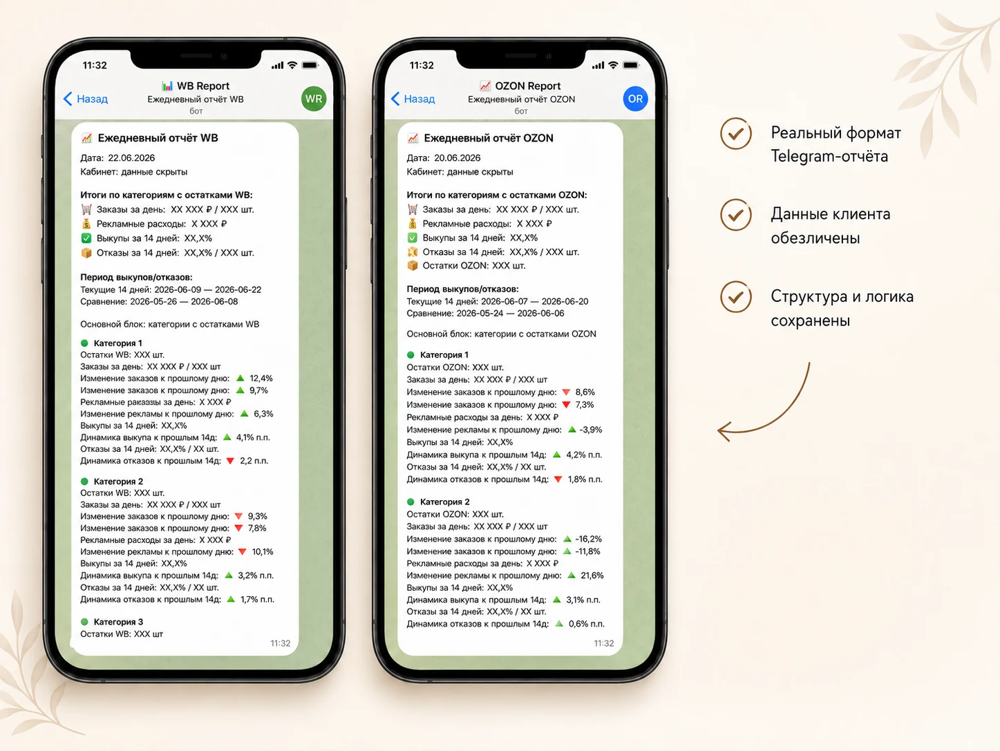
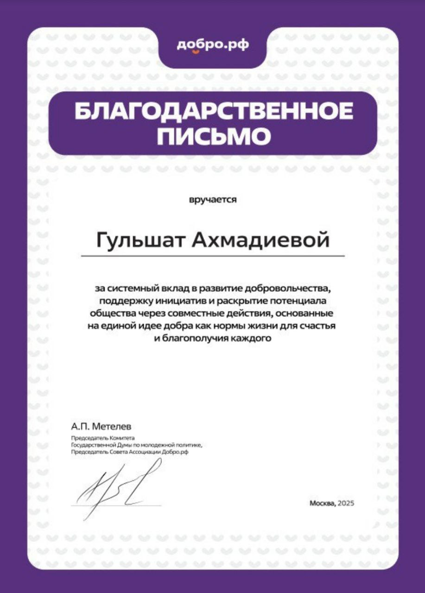
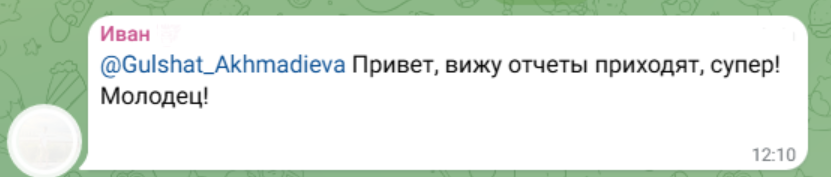

Анализ и автоматизация бизнес-процессов
Разбираю процесс, нахожу повторяющиеся действия, потери времени и данных, проектирую понятный сценарий улучшения.
Аналитика бизнес-процессов • ИИ-автоматизация
Помогаю бизнесу сокращать ручную работу, объединять разрозненные данные и внедрять ИИ там, где он даёт реальную пользу.
Автоматизированная отчётность, ИИ-ассистенты и цифровые сервисы.
Естественный интеллект — в основе. Искусственный — как усилитель.
19 лет
в аналитике и бизнес-процессах
Реальные внедрения
ИИ и автоматизации
WB / Ozon
автоматизированная отчётность
Интерактивная диагностика
Пройдите короткую диагностику и узнайте, какие процессы забирают больше всего времени, где теряются данные и с чего начать внедрение без лишней разработки.
Пройти диагностикуНе начинаю с выбора сервиса или нейросети. Сначала разбираю задачу, процесс и ожидаемый результат и только после этого подбираю технологию.
Разбираю процесс, нахожу повторяющиеся действия, потери времени и данных, проектирую понятный сценарий улучшения.
Создаю решения для работы с информацией, обращениями, контентом и внутренними задачами бизнеса.
Объединяю данные, сокращаю ручной сбор показателей и помогаю быстрее видеть важные изменения.
Превращаю идею в понятный рабочий инструмент: страницу, квиз, калькулятор или MVP.
Определить, что происходит сейчас, где возникает проблема и какой результат действительно нужен.
Найти повторяющиеся действия, потери времени, разрывы в данных и зависимость от ручной работы.
Выбрать понятный сценарий автоматизации без лишней сложности и ненужных инструментов.
Создать первую рабочую систему, которую можно проверить на реальной задаче.
Протестировать логику, устранить ошибки и встроить решение в существующий процесс.
Проекты, в которых технологии решают конкретную задачу: собирают данные, сокращают ручную работу, помогают принимать решения или превращают идею в рабочий инструмент.
Система ежедневно собирает данные из кабинетов маркетплейсов, обрабатывает показатели и формирует понятные отчёты в Telegram. Отдельные отчёты объединяются в общий отчёт по холдингу.

Концепция цифрового помощника для добровольческих инициатив: работа с информацией, поддержка пользователей и структурирование полезных материалов.
Интерактивная диагностика, которая помогает определить, какие процессы забирают время, где теряются данные и с чего можно начать автоматизацию.
Пройти диагностикуМини-сервис для проверки бизнес-логики цифровой идеи: помогает оценить регулярность проблемы, потенциальную аудиторию, готовность платить и определить первые шаги проверки гипотезы.
Проверить идеюПрикладные решения
От аналитической методики до цифрового консультанта: контроль качества, обработка обращений и автоматизация клиентских сценариев.
Аналитическая методика
Разработанная система контроля клиентских диалогов для стоматологии: критерии, веса, критические ошибки, примеры сильных и слабых ответов и единая итоговая шкала.
13 критериев · 4 критических · 6 типов звонков · 100 баллов
Цифровой консультант
Обрабатывают первичные обращения, отвечают на типовые вопросы, работают с сомнениями, собирают контакт и возвращают клиента к прерванному диалогу.
Консультация · Работа с возражением · Передача лида · Повторное касание
Почти 20 лет я работала с аналитикой, финансовыми рисками, бизнес-процессами, клиентскими задачами и управлением. Этот опыт помогает видеть за техническим запросом реальную задачу бизнеса.
Сегодня я соединяю этот фундамент с ИИ, автоматизацией и разработкой цифровых решений.
Мне важно доводить идеи до результата — рабочего инструмента, общественно полезного проекта или профессионального признания.
Участие в конкурсе и очное мероприятие в Москве.

ИЗ РЕАЛЬНЫХ ПЕРЕПИСОК
Гульшат, вижу, отчёты приходят, супер! Молодец!
ФРАГМЕНТ РЕАЛЬНОЙ ПЕРЕПИСКИ

Присоединюсь к словам коллеги, крутые отчёты приходят. Классно!
Попробовала всё подобрал, даже бижутерию и сумку.
Хочу снова поблагодарить за песню. Такой классный сюрприз получился, подруга была в восторге.
Начать с задачи
Расскажите, что отнимает время, где теряются данные или какую идею хочется превратить в работающий инструмент.
Помогу разобраться, что действительно стоит автоматизировать и с чего начать.
Выберите удобный способ связи — отвечу и помогу понять, с чего начать.
Опишите задачу в нескольких строках — свяжусь с вами удобным способом.
{kind=link}